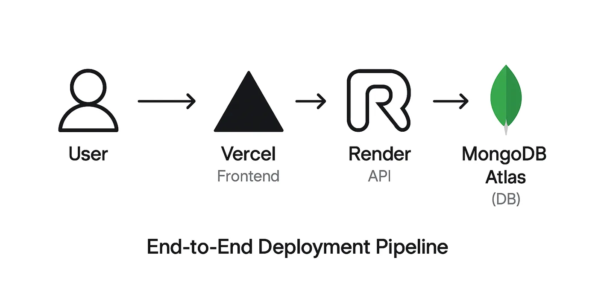
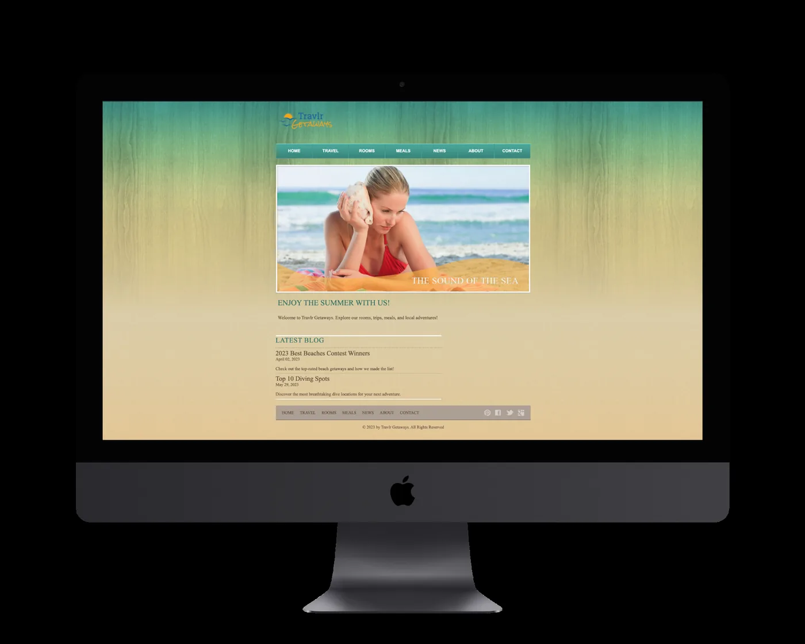

case study — academic project
Travlr Getaways
Full-stack travel platform · MEAN stack · SNHU CS-465
A brochure-style static site rebuilt as a database-driven web application — with a REST API, secure admin workflows, and a layered, scalable architecture.
- Role
- Sole Full-Stack Developer
- Stack
- MongoDB · Express · Angular · Node.js · Mongoose · JWT · Handlebars
- Scope
- Academic project · 2025
the problem
Travlr Getaways is a boutique travel brand that outgrew its original site: static HTML, no backend, no database, no admin. Every update meant editing markup by hand — no trip filtering, no interface to add or edit offerings, and no separation between internal and public views.
what i built
- RESTful API — Express endpoints for trip CRUD and authentication (
/api/trips,/api/login,/api/register), backed by MongoDB - Server-rendered customer site — Express + Handlebars (layouts & partials) for public trip browsing
- JWT-secured Angular admin SPA — a separate single-page app for trip management, protected by an auth guard and token interceptor
- Schema design — Mongoose models with validation for trip and user data
- Responsive UI — device-agnostic layouts with dynamic trip loading


beyond the code
The design work came before the code: class, sequence, and architecture diagrams mapped the request/response lifecycle and the layered split between the customer site, the API, and the database. The harder problems were the migration from static HTML to a database-driven app, admin workflows intuitive enough for non-technical staff, and validation paired with secure, token-based access control.